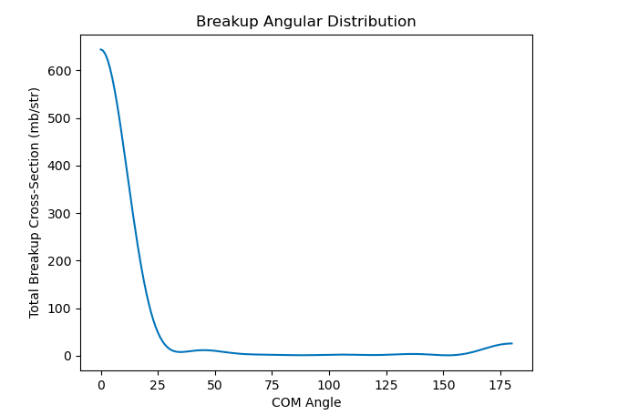
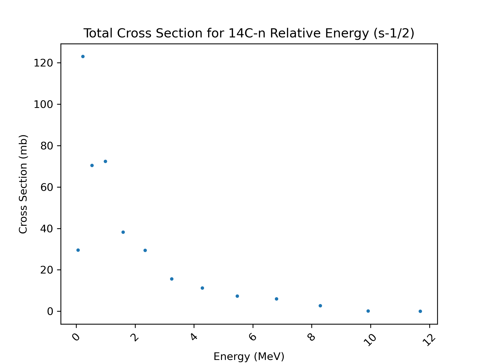

The github repository located here contains this fully implemented workflow for carbon-15 scattering on deuteron.
The input file is set up for the reaction information. The goal of the calculation is to determine the breakup angular distribution for carbon-15 scattering on a deuterium target.
First, ensure snakemake is installed where the workflow will be run. The instructions to download snakemake can be found here.
Once snakemake is installed where the workflow will be ran, clone the repository using "git clone https://github.com/cgbeckman/CMSE890Project.git".
The reaction information is all set in the input file, which is located in workflow/input/example-br.in. This means that we are ready to run the calculation.
To run the calculation, there are two methods. The first is to run snakemake in the command line. To do so, navigate to "workflow/". Then in the command line run "snakemake".
The second option is for running the calculation on a system which uses slurm job submission. Navigate to the directory "workflow". In this directory is a file called "run_workflow.sb". To submit the entire workflow to run on hpcc, enter the command "sbatch run_workflow.sb" on the command line. This example only takes ~5 seconds to run, and the resulting slurm file will be stored in "workflow/slurm_files". The output files will be stored in "workflow/outputs".
To view the resulting energy integrated angular distribution, and angle integrated energy distribution, navigate to the plots directory stored in "workflow/outputs/plots/". Any graphical viewer can be used to view the plots. Below is what the result should look like.

The angle integrated energy distribution should match the following result.
